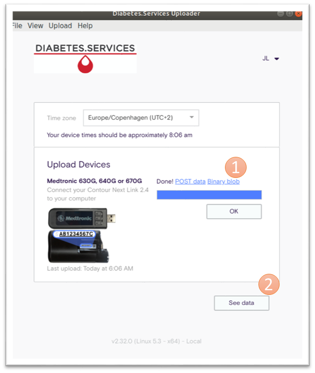

Get started
Quick up-and-running
In Get started you can find a description to get quick up-and-running on a Linux machine:
- Prerequisites
- A machine with Ubuntu and how to install Docker
- Tidepool
- Create a local instans of the platform with a local Kubernetes cluster
- Install uploader and web
- Semantic Container
- Install semantic container
Integration
Extract data from device using Tidepool and use in Semantic Container dataflows

Setup a single Linux integration demo
When finished uploading then you can do the following: (refer to the orange number in figure):
- Grab the data for further use in the dataflows
- See the data in Tidepool Web
In the dataflow
Tidepool integration you can find a demonstration of these capabilities:
- reading data from a Tidepool supported device
- avoding duplicates on data upload into a Semantic Container
- providing a Diabetes specific Usage Policy
- generating a Provenance trail specific to diabetes devices
Personal data
Store data to Semantic Container and get insigths in PDS
In the dataflow
Personal_Data you can find a demonstration of these capabilities:
- converting diabetes data into FHIR-compliant RDF format
- accessing data through a SPARQL endpoint
- uploading data to the OwnYourData Data Vault
- strong encryption of diabetes data
- authentication methods for diabetes data
- visualizing data in a Knowledge Graph
- gain insights from personal data through individual analysis
- access and process diabetes data with standard tools
Data donation
Share data and identify if data leak
In the dataflow Data_Donation you can find a demonstration of these capabilities:
- avoding duplicates on data upload
- providing a Diabetes specific Usage Policy
- generating a Provenance trail specific to diabetes devices
- matching Usage Policies specifically based on subsets for Data Categories
- applying and verifying digital watermarks
Data tracing
Share data and aggreate/anonymize data
In the dataflow Data_Tracing you can find a demonstration of these capabilities:
- PwDs upload their local diabetes data to an aggregation/anonymization service
- aggregating/anonymizing data in a Semantic Container
- a service provider transfers selected (aggregated) data to a 3rd party
- each PwD traces his/her own data and compiles a usage report
Proxy
Use a proxy to handle integration
We have defined a concept of a health data store (HDS) to merit of higher protection for sensitive data as health data. For scenarios of multiple users in the same environment we have developed a template
that can be used to demonstrate the workflow as swagger response.
In Proxy you can find a demonstration of these capabilities:
- template to build a demo with Python using Flask web application framework
- local demo and upload to a docker repository available for the kubernetes cluster
- design and security considerations for deployment for building an online demo